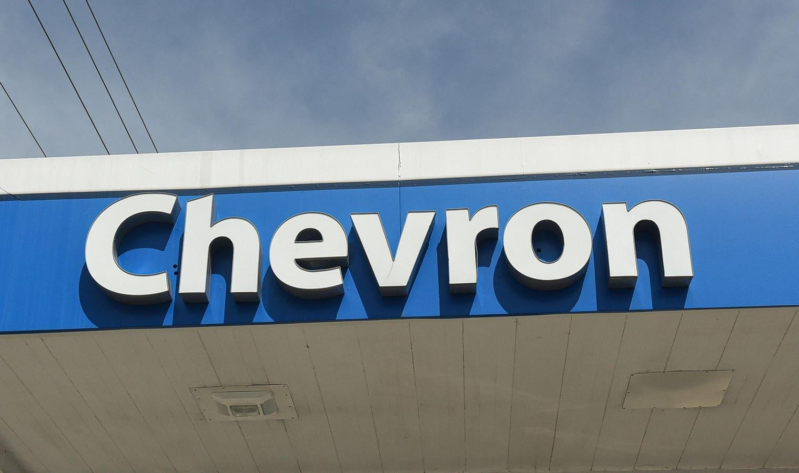

Down 13% This Year Will Chevron Stock Rebound After Its Q3?Chevron Corporation (NYSE: CVX), a company manufacturing and selling a range of refined petroleum products, including gasoline, diesel, marine, and aviation fuels, premium base oil, finished lubricants, and fuel oil additives, is scheduled to announce its fiscal third-quarter results on Friday, October 27. Chevron Chevron is buying fellow oil and gas producer Hess in an all-stock deal. The company is exchanging 1.025 of its shares for each share of Hess to pay $171 per share. In this scenario, Hess' equity is valued at $53 billion, while the merger's full value is $60 billion (after the assumption of debt). This acquisition will enhance and extend Chevron's production and free cash flow growth outlook into the 2030s. CVX Our forecast indicates that Chevron's valuation is around $170 per share, which is 6% higher than the current market price. Look at our interactive dashboard analysis on Chevron Earnings Preview: What To Expect in Q3? for more details. (1) Revenues expected to be slightly above the consensus estimates Trefis estimates Chevron's Q3 2023 revenues to be around $49.9 Bil, marginally above the consensus estimate. The company's second-quarter revenues fell 29% year-over-year (y-o-y) to $48.9 billion. CVX's worldwide net oil-equivalent production totaled 2.96 million barrels of oil equivalent (boe)/day, up 2% y-o-y and flat quarter-over-quarter, as Permian Basin output hit a quarterly record 772K boe/day (up 11% y-o-y). That said, the company looks well-positioned to benefit from its growing activity in the Permian Basin. By 2026, the company expects to generate more than $4 billion in free cash flow from oil production in the Permian. For the third quarter, Chevron is expecting upstream turnarounds and downtime to reduce production by ~110K boe/day. (2) EPS likely to beat consensus estimates marginally Chevron's Q3 2023 earnings per share (EPS) is expected to be $3.36 as per Trefis analysis, slightly ahead of the consensus estimate. In Q2, the company's net income dropped to $6.01 billion, or $3.20/share, from $11.62 billion, or $5.95/share, in the year-earlier quarter. In the first half of 2022, Chevron booked $10.1 billion in upstream earnings and $3.31 billion in downstream earnings. (3) Stock price estimate higher than the current market price Going by our Chevron's Valuation, with an EPS estimate of around $13.24 and a P/E multiple of around 12.9x in fiscal 2023, this translates into a price of about $170, almost 6% higher than the current market price. It should be noted that we use core sales revenue (which comes from the sale of hydrocarbons) figures that exclude the revenue it generates from the distribution, processing, and marketing of hydrocarbon and other sources of income. It is helpful to see how its peers stack up. Chevron Peers shows how CVX stock compares against peers on metrics that matter. You will find other useful comparisons for companies across industries at Peer Comparisons. Invest with Trefis Market-Beating Portfolios See all Trefis Price Estimates |
 |